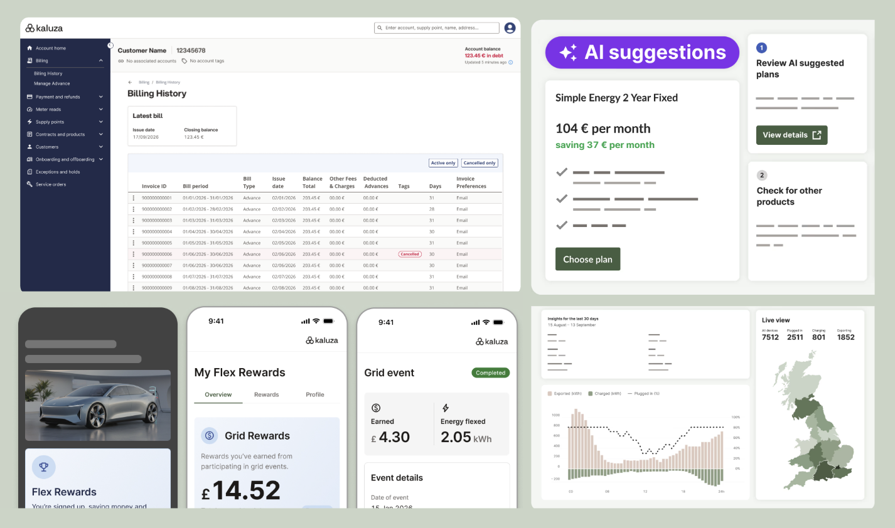
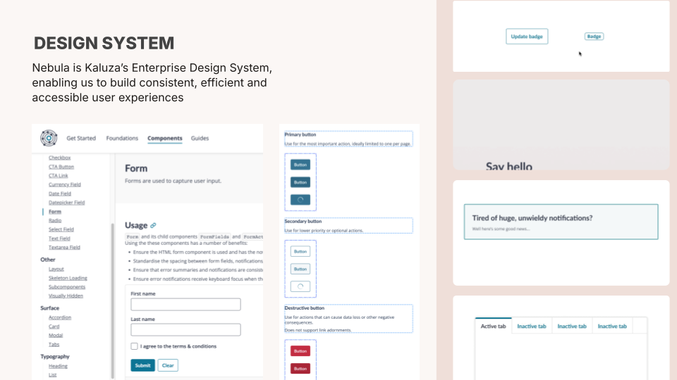
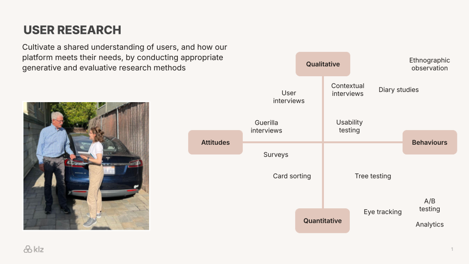
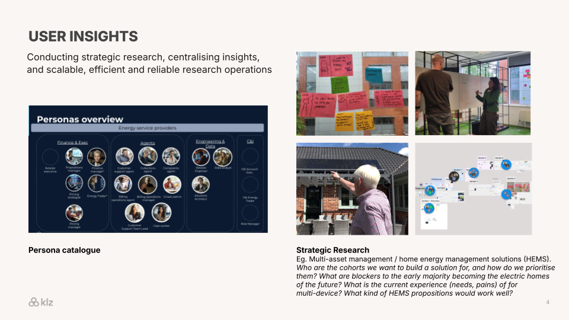
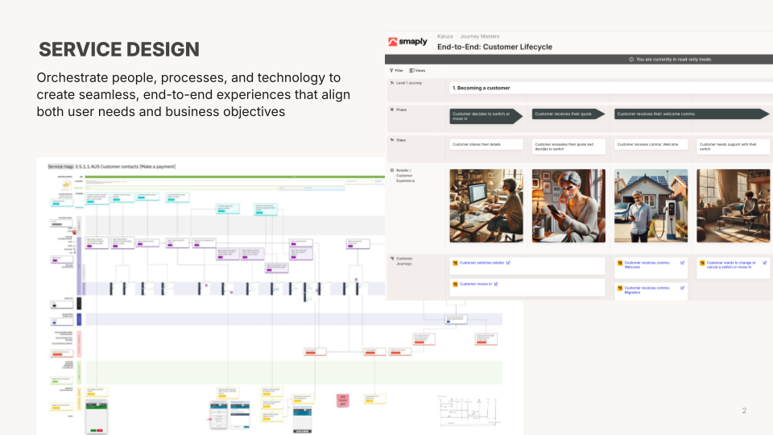
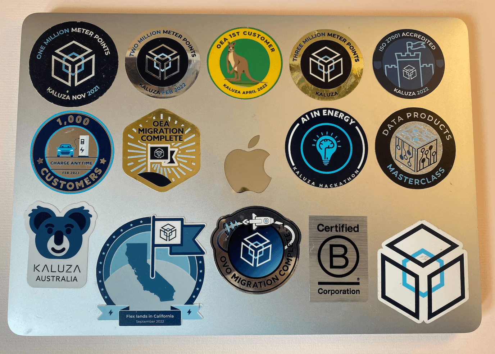

Company and dates: Kaluza · Dec 2019 – Present
Leading UX at scale across a global energy intelligence platform
Kaluza is an intelligent energy platform powering major utilities worldwide, including OVO, AGL and ENGIE, across billing, customer care, energy optimisation and EV smart charging, with products deployed in 5 countries and 26 million licensed users on the platform.

The context
Kaluza was founded in 2019, spun out of OVO Energy to build a next-generation SaaS platform for the global energy transition. In recent years the business has grown into a market-leading energy intelligence company, ranked number one for innovation in the 2025 Frost & Sullivan Radar for Digital Platforms in Energy Utilities, with a valuation that reached $500m following an AU$150m investment from AGL in 2024.
My role
Lead Designer () through to Head of Design ( to present). I have been part of Kaluza's journey from start-up to global scale-up, leading UX across a complex, multi-product platform, with a particular focus on agent and retailer operational tooling, billing, payments and customer care.
What I did
Scaling the team
I've grown the team from 5 to 25+ practitioners, securing investment for new roles and establishing a structure of Lead Designers embedded in cross-functional Value Streams. I managed hiring across the UK, Portugal and Australia, keeping team engagement scores consistently high throughout periods of change.




Creating the conditions for design to thrive
As the platform expanded into multiple client markets and geographies, I built the operational infrastructure that kept our globally distributed team aligned, motivated and effective. This included a centralised UX delivery roadmap, regular design ceremonies and critiques, and cross-functional alignment sessions. I improved how design and research activity was made visible to senior leadership through better reporting and linking our work to outcomes.
I created Kaluza's UX Career Framework and Skills Map, standardised job titles across the function and managed the team's learning and development budget to ensure opportunities were allocated equitably across the team.
Launching an Enterprise Design System
I defined the strategic direction and drove the relaunch of our design system, which was originally built around end-customer energy account experiences, relaunching it as an Enterprise Design System optimised for building retailer operational and agent products at scale. I presented the relaunch at the company-wide Kaluza Conference, establishing it as a foundational platform enabler. The design system underpins accessible, consistent experiences across the tooling suite of products for our retail clients.
AI-enabled design
I am currently driving our UX team to become genuinely AI-enabled, building the skills, tools and mindset needed to work practically with the latest AI tools in ways that are effective, efficient and ethical, from prototyping with natural language prompts to piloting Model Context Protocol assisted workflows that bridge the gap between design and code.

Ensuring design quality while delivering for multiple clients in different markets
As Kaluza has extended rapidly across multiple clients and markets, the pressure to meet tight delivery milestones can create a tension with design quality. This has led, on occasion, to front-end implementations not matching approved designs, accessibility standards being inconsistently met and agreed iterations pushed out of scope.
I engaged with Product and Engineering leadership, framing this not as a UX team problem but as a shared delivery challenge around six specific asks:
- Treat the UX Definition of Done as a formal release gate
- Put accessibility and UX quality onto delivery roadmaps
- Adhere to a collaborative designer-to-engineer handover process
- Address the front-end quality gap created by the move to full-stack engineering
- Support on removing any client-side barriers to user research
- Model the right language and culture around design work at a leadership level
By getting buy-in from the senior leadership team, we could move forward with a shared UX quality framework and named accountabilities across functions.
Making difficult decisions and managing strategic risk
A key part of my role is striking the right balance between keeping delivery teams staffed and supporting pre-sales activity to win new business. I run a weekly design allocation and prioritisation session with Lead Designers to manage these decisions, keeping senior stakeholders informed of trade-offs and priorities.
I also look beyond the immediate delivery horizon to identify risks others may not yet see. When I recognised that critical product knowledge was concentrated in individual Product Managers with no clear documentation strategy in place, I escalated it as a company-wide risk. The result was a funded documentation site, a new Technical Writer hire and a standardised approach to client-facing docs across the business.
Outcomes
-
In customer service agent efficiency
-
In total handling time
-
In technology cost savings
-
Data points processed daily
-
Frost & Sullivan innovation ranking, 2025
-
countries with Kaluza products deployed
"Paul's strategic vision and organisational design have significantly contributed to the success of Kaluza. His data-driven approach, ability to identify market opportunities through competitive analysis, and passion for the design craft made him an invaluable part of the team."